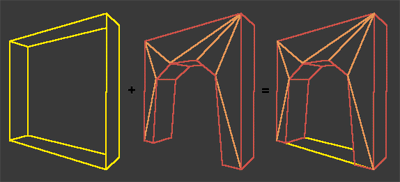

Making Arches
Introduction
It's entirely possible to make an arch by just subtracting a nicely-shaped brush between two rooms. However, it's more efficient from the point of view of the game engine to use a slightly different strategy: a square hole is made first with a subtractive brush, and this is then filled up again with a semisolid brush.
Using a semisolid ensures that the diagonal lines of the arch's curvature only cause BSP cuts locally. The arch textures found in many UT packages are designed to be used in this way, applied on both sides of the semisolid brush.
Picture of the overall strategy:

|
Method
Preparing your level for an arch
Depending on how big your arch is going to be, you'll need to substract a hole big enough to fit the arch.
Mostly it will be 128-256 width, 128-256 high and 16-32 deep.
Making the Arch using 2D-editor
You now need a brush shape that will fill most of this hole back in, leaving just the arch. This can be easily created in the 2D Shape Editor.
We've made a start on gathering up 2D shape files for the arch textures that come with UT, so eventually this step may not be needed...
In the meantime: starting with the basic square, select the bottom side by selecting the bottom right vertex. Split this, move the new point up, then split the sides that have just become diagonal. Continue splitting and moving points into place until the shape covers the solid wall part of the arch texture: picture below. The Making a 2D shape page has more details on this step.
Tips on matching up to an Arch texture
- The easiest way is to import the texture into the 2D-Editor. Warning: this can sometimes crash UnrealEd. This is for the fearless.
- Subtract a cube brush with the same dimensions as the texture, so that the floor has the texture exactly lines up. Now start drawing your shape. To check how you're doing:
- Extrude the shape
- Line up the red builder brush to your texture testing room in top view
- in side or front view, place the top of the RBB just touching the floor of the texture testing room.
- Compare the edges of the RBB with the texture.
Adding the arch as a semisolid in your level
Once the arch is finished in 2D-editor you still need to turn it into a real brush for use in your level.
- Hit the extrude button
- Type in how long you want the arch to be. I found 16 or 32 to be rather good. It really depends on the level though.
- The red builder brush in UED should now get the shape of your arch.
- Rotate it. If it doesn't rotate correctly, you'll have to Transform Permanently) and move it in place. See Brush Rotate for info on dealing with rotation problems.
- Now you can do two things:
- Add it as a regular brush, right-click it and goto Solidity→Semi-Solid
- Click Add Special in the toolbox and select Semi-Solid Decoration from the presets list.
Merging the polys of the arch
It's always good to merge polys on arches, because the 2D-editor will create the arch of a whole bunch of polys and aligning an arch-texture can be a pain. Also merging polys should improve performance 
So you should definetely merge polys on your arch. For instructions on how to do this, go here: Merge Polygons.
Texturing your arch
Since by this time the arch should have merged polys, texturing it will be rather easy. Just select the arch texture you want it to have and apply it to the arch. Move it in place and your set ,)
Question: What needs to be said about texturing the inside of the arch??
To Do:
- texturing: choosing textures that match for the arch surround & the wall beyond.
- Strategies for dealing with arch textures that don't have a seamless match to a wall texture (sinking the arch into the wall or protruding it for example, or adding trim around it)
Arch textures in Standard UT texture packs
Add your name to the list item if you have the corresponding 2DS file or intend to make it.
- Ancient (3, indentical shape) – Tarquin
- Castle1 (1 texture)
- Crypt2
- cInoxDra, cInoxDrf,
- ClifRch1, rch1trch
- ClifRch2, rch2trch
- ClifRch3
- DecayedS (some door textures only)
- ...
- PlayrShip
- vDoor2, Door2_30 – Tarquin
- Door1BK & friends
- Indus2 (Frame1C == the arch from Castle1)
- Indus3: one arch & door texture
- Mine
- 3 arches
- MDoors series – Tarquin has the door shape only, not the outer part
- MMdoor1
- SkyCity
- Arches: many diffrent arches, matching walltextures included